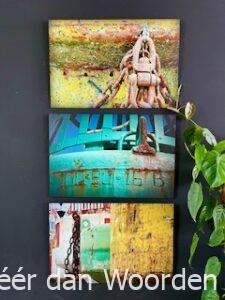

Onlangs werd ik benaderd door een jong stel van begin twintig dat ging samenwonen. Met zorg en smaak wilden ze hun allereerste huis inrichten, samen. Ze hadden al vaker fotowerk van mij gezien en vroegen of ik ideeën had voor de donkere muur in hun woonkamer, zwart! De stijl van hun inrichting liet zich typeren als industrieel design, zo vertelden ze.
Vereerd door hun belangstelling bezocht ik het paar om ze persoonlijk te ontmoeten,
hun wensen te leren kennen en de sfeer van hun stadspaleisje te proeven.
Wat me trof bij die ontmoeting was hoe ze inderdaad samen onderzochten wat ze beiden mooi vinden. De een zei ‘stoer’, de ander ‘origineel’ en zo vulden ze elkaar telkens aan met persoonlijke elementen als ‘modern, ‘warm’, ‘sprekend’ en meer van dit soort karakteristieken. Maar de meest belangrijke en tegelijk moeilijkste luidde toch wel: ‘Het moet iets zijn zoals wij’.
Hoera, ik had een opdracht en wat voor een! Een mooie én een moeilijke, noem het een uitdaging. Onderweg naar huis begon het al meteen, het creatieve proces van inleven, broeden, visualiseren en dat ging zo een paar dagen door. Tot opeens de uitdrukking ‘ruwe bolster, blanke pit’ bij me opborrelde. Ruwe bolster hé, daar heb ik een titelserie van, foto’s van door wind en water verweerde boeien. Foto’s die de schoonheid laten zien van een ruige en ongepolijste buitenkant, als beschermlaag rond een pure zuivere binnenkant. Raak! De symboliek met hen als mens was daar.
Vol inspiratie kroop ik achter mijn laptop en selecteerde vijf foto’s die in elke combinatie als een tweeluik bij elkaar zouden kunnen horen, foto’s die met elkaar een verhaal vertelden. Want dat leek mij het meest toepasselijk voor ‘zij samen’. Al was de keuze natuurlijk aan het jonge stel.
Enthousiast stuurde ik ze mijn ideeën, stiekem meer dan benieuwd naar hun reactie. Die liet niet lang op zich wachten, ze vonden ze ‘geweldig’! Er was alleen één probleem, ze konden niet kiezen. Zij wilde er twee, hij drie. Zij wilde ze onder elkaar, hij naast elkaar. Of net andersom, daar wil ik vanaf zijn. Ik zei: Neem je tijd en doe wat proefjes, dan kan je weloverwogen kiezen. Zo hebben ze uiteindelijk met eenvoudige printjes allerlei varianten uitgeprobeerd, met ten slotte de hier getoonde versie op geborsteld aluminium als resultaat.
Ze waren er ‘super blij’ mee en vonden het ‘echt heel gaaf’. En hun vrienden ook, bleek niet veel later. Want als klap op de vuurpijl kochten ze er nóg een, voor een van hun besties die onlangs op zichzelf was gaan wonen. Dat vond ik dan weer ‘echt heel gaaf’.
Geloof het of niet, maar deze opdracht voelt als een heus compliment. Dat je iets hebt gemaakt wat jonge gasten die nog niet eens half zo oud zijn als jij mooi vinden, nee sterker, wat ze zelfs zó mooi vinden dat ze het als kunst in hun huis willen hangen. Het maakte me ongelofelijk trots en blij. Nog steeds.
Vanaf mijn roze wolk, maart 2024.